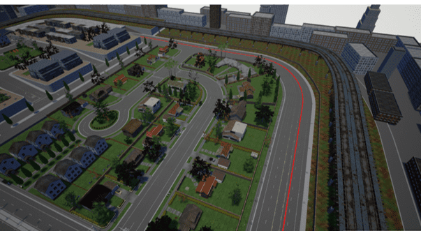
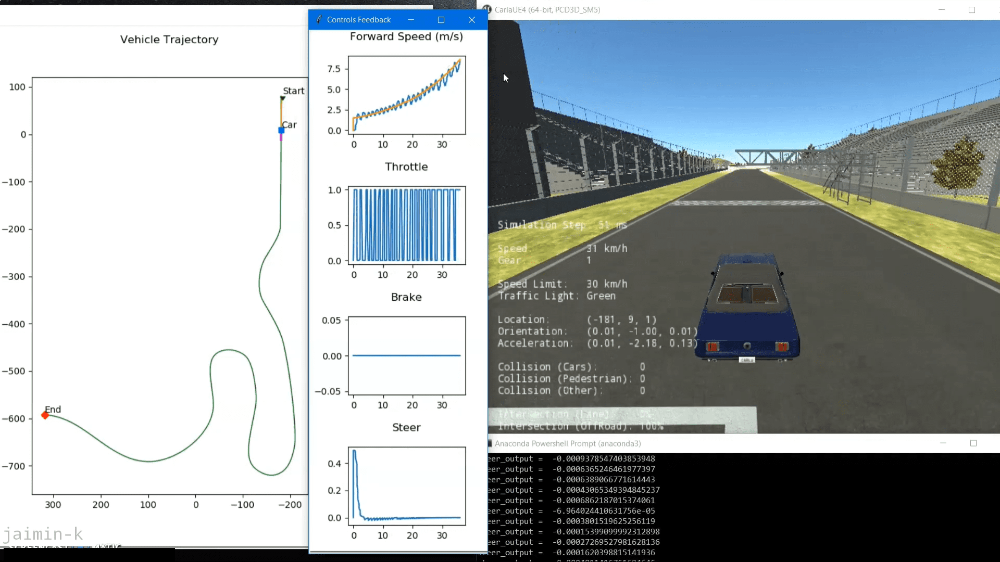
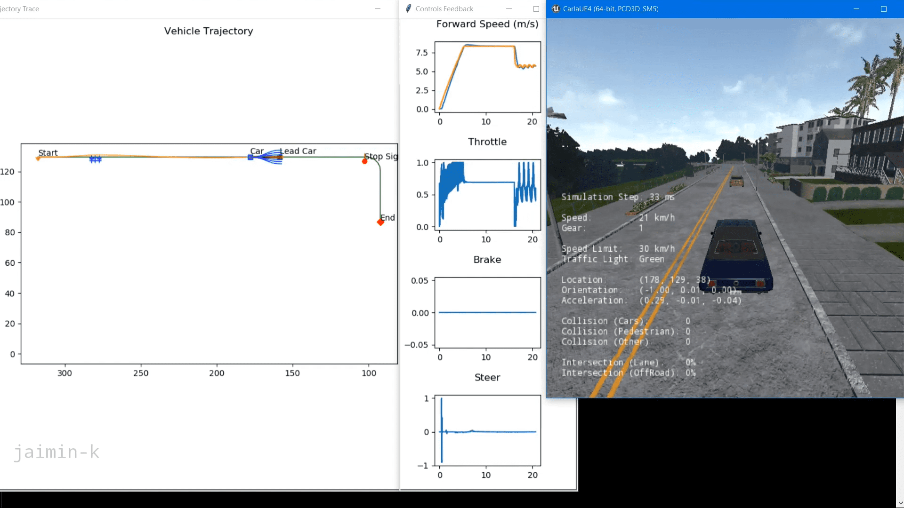

Virtual Self-Driving Car
Supervisor: Prof. Sejal Kadam
-
Undergraduate Honors Thesis
Road traffic injuries claim more than 1.35 million lives each year and have a huge
impact on health and development of a nation. They are the leading cause of death
among young people, and cost governments approximately 3% of GDP. One
solution to minimise this massive human and economic toll is to develop
Autonomous Vehicles. These vehicles can help reduce the 78.5% of accidents
that are caused due to driver’s fault with the help of Intelligent Driving Systems.

The very first stage of developing Autonomous Vehicles is the simulation of
underlying algorithms. The aim is to simulate path planning
algorithm, lane keeping algorithm, using Convolutional
Neural Networks. Principles of Digital Image Processing and Machine
Learning were used to successfully simulate on an open source platform - CARLA
Simulator. All the algorithms are implemented using Python 3.7, with the help of
various libraries available: OpenCV2, NumPy, PyGame, TensorFlow and Keras.

Imitation Learning-Behavioral Cloning in Autonomous Car
To mimic the driving behavior of a human driver by training a model using Deep Neural Networks for the car to drive autonomously on the trained model.
The project was implemented on Udacity Self-Driving Car simulator where the model was tested on two different tracks.

Motion Planning for Self-Driving Cars-CARLA Simulator
Implementing a functional motion planning stack to avoid static and dynamic obstacles while tracking the centerline of the lane, while also handling stop signs. To accomplish this, behavioral planning logic is implemented along with static collision checking, path selection, and velocity profile generation.

Longitudinal & Lateral Control for Autonomous Vehicles-CARLA Simulator
To keep the ego car travelling along the centerline of the lanes on the road by adjusting the front steering angle of the ego car. Thus, with lateral control and longitudinal control, regulating the speed and path tracking performance of the car using Python.
The goal is to control the vehicle to follow a race track by navigating through predefined waypoints.